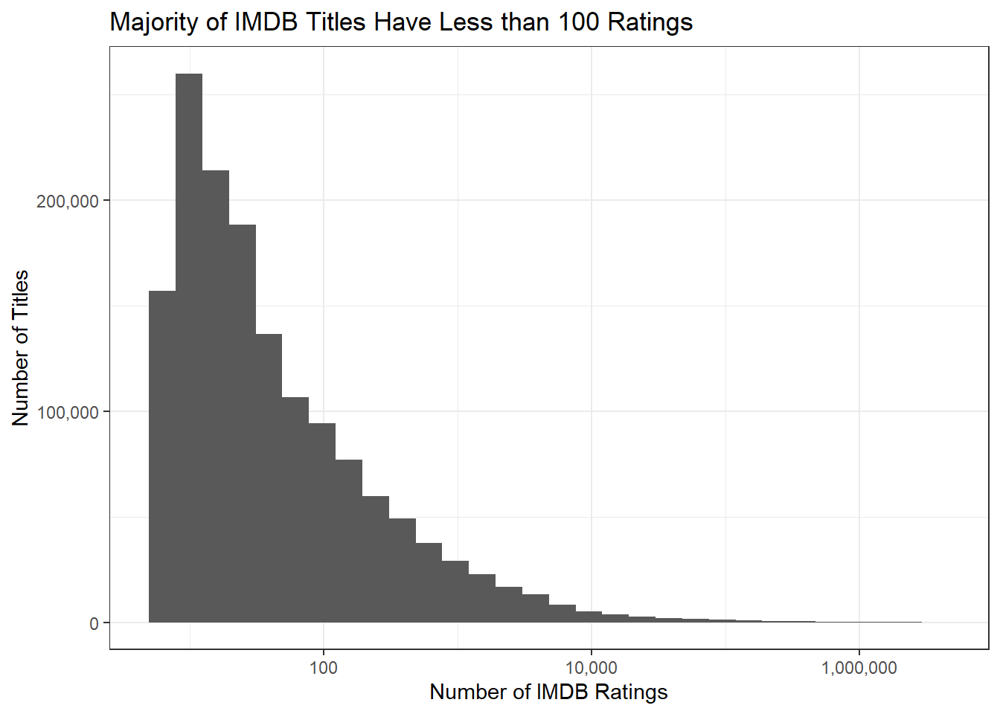
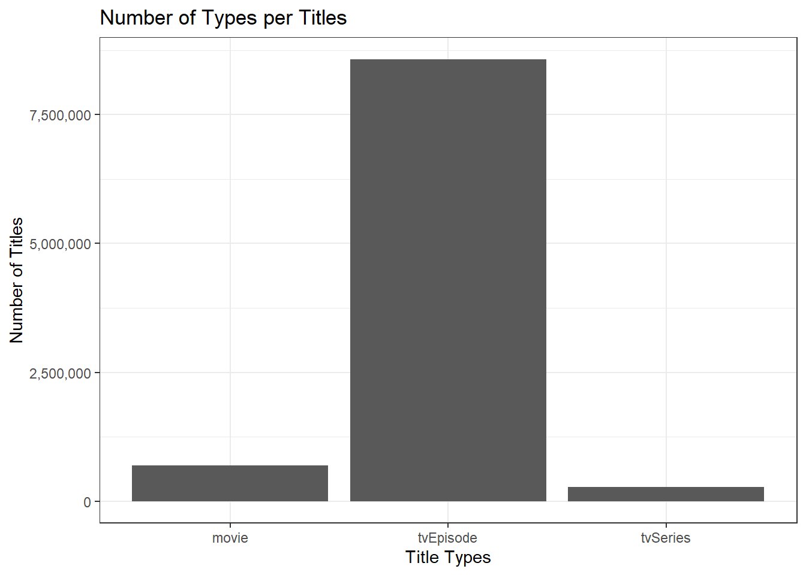
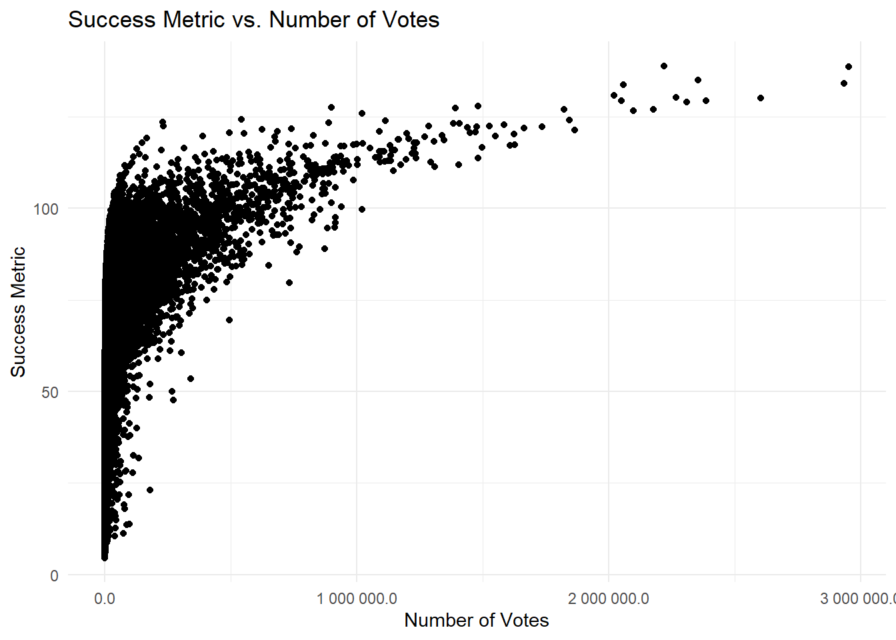
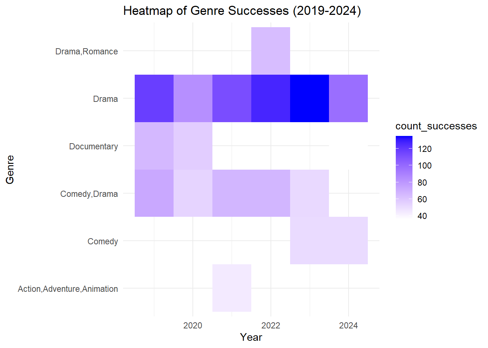
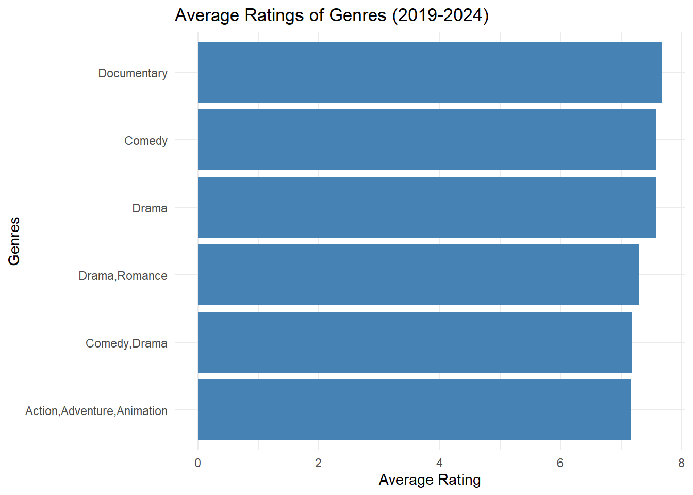

options(repos = c(CRAN = "https://cloud.r-project.org"))Mini project 02
Introduction
Welcome to Mini-Project 02. This project aims to recommend successful movies to recreate by analyzing various data sources. We will look at movie ratings, genres, and the involvement of key actors and directors to understand what makes a film successful.
By calculating a success metric based on ratings and audience engagement, we can filter for films that have performed well. The goal is to create a data-driven list of films that have the potential for a successful recreation, ensuring they resonate with audiences.
Gathering the IMDB Databases
get_imdb_file <- function(fname){
BASE_URL <- "https://datasets.imdbws.com/"
fname_ext <- paste0(fname, ".tsv.gz")
if(!file.exists(fname_ext)){
FILE_URL <- paste0(BASE_URL, fname_ext)
download.file(FILE_URL,
destfile = fname_ext)
}
as.data.frame(readr::read_tsv(fname_ext, lazy=FALSE))
}
NAME_BASICS <- get_imdb_file("name.basics")Rows: 13884604 Columns: 6
── Column specification ────────────────────────────────────────────────────────
Delimiter: "\t"
chr (6): nconst, primaryName, birthYear, deathYear, primaryProfession, known...
ℹ Use `spec()` to retrieve the full column specification for this data.
ℹ Specify the column types or set `show_col_types = FALSE` to quiet this message.TITLE_BASICS <- get_imdb_file("title.basics")Warning: One or more parsing issues, call `problems()` on your data frame for details,
e.g.:
dat <- vroom(...)
problems(dat)Rows: 11174655 Columns: 9
── Column specification ────────────────────────────────────────────────────────
Delimiter: "\t"
chr (8): tconst, titleType, primaryTitle, originalTitle, startYear, endYear,...
dbl (1): isAdult
ℹ Use `spec()` to retrieve the full column specification for this data.
ℹ Specify the column types or set `show_col_types = FALSE` to quiet this message.TITLE_EPISODES <- get_imdb_file("title.episode")Rows: 8579083 Columns: 4
── Column specification ────────────────────────────────────────────────────────
Delimiter: "\t"
chr (4): tconst, parentTconst, seasonNumber, episodeNumber
ℹ Use `spec()` to retrieve the full column specification for this data.
ℹ Specify the column types or set `show_col_types = FALSE` to quiet this message.TITLE_RATINGS <- get_imdb_file("title.ratings")Rows: 1489867 Columns: 3
── Column specification ────────────────────────────────────────────────────────
Delimiter: "\t"
chr (1): tconst
dbl (2): averageRating, numVotes
ℹ Use `spec()` to retrieve the full column specification for this data.
ℹ Specify the column types or set `show_col_types = FALSE` to quiet this message.TITLE_CREW <- get_imdb_file("title.crew")Rows: 10514405 Columns: 3
── Column specification ────────────────────────────────────────────────────────
Delimiter: "\t"
chr (3): tconst, directors, writers
ℹ Use `spec()` to retrieve the full column specification for this data.
ℹ Specify the column types or set `show_col_types = FALSE` to quiet this message.TITLE_PRINCIPALS <- get_imdb_file("title.principals")Warning: One or more parsing issues, call `problems()` on your data frame for details,
e.g.:
dat <- vroom(...)
problems(dat)Rows: 86651930 Columns: 6
── Column specification ────────────────────────────────────────────────────────
Delimiter: "\t"
chr (5): tconst, nconst, category, job, characters
dbl (1): ordering
ℹ Use `spec()` to retrieve the full column specification for this data.
ℹ Specify the column types or set `show_col_types = FALSE` to quiet this message.Data Sub-Sampling
Restricting to people with at least two “know for”credits:
IMDB has a long tail of obscure movies.
# Install the ggplot2 package (only need to do this once)
install.packages("ggplot2")Installing package into 'C:/Users/krisf/AppData/Local/R/win-library/4.4'
(as 'lib' is unspecified)package 'ggplot2' successfully unpacked and MD5 sums checked
The downloaded binary packages are in
C:\Users\krisf\AppData\Local\Temp\RtmpWQw1EN\downloaded_packageslibrary(ggplot2)
library(scales)
TITLE_RATINGS |> ggplot(aes(x=numVotes)) + geom_histogram(bins=30) + xlab("Number of IMDB Ratings") + ylab("Number of Titles") + ggtitle("Majority of IMDB Titles Have Less than 100 Ratings") + theme_bw() + scale_x_log10(label=scales::comma) + scale_y_continuous(label=scales::comma)
Throw out any tittle less than 100 ratings.
install.packages("dplyr")Installing package into 'C:/Users/krisf/AppData/Local/R/win-library/4.4'
(as 'lib' is unspecified)package 'dplyr' successfully unpacked and MD5 sums checkedWarning: cannot remove prior installation of package 'dplyr'Warning in file.copy(savedcopy, lib, recursive = TRUE): problem copying
C:\Users\krisf\AppData\Local\R\win-library\4.4\00LOCK\dplyr\libs\x64\dplyr.dll
to C:\Users\krisf\AppData\Local\R\win-library\4.4\dplyr\libs\x64\dplyr.dll:
Permission deniedWarning: restored 'dplyr'
The downloaded binary packages are in
C:\Users\krisf\AppData\Local\Temp\RtmpWQw1EN\downloaded_packageslibrary(dplyr)
Attaching package: 'dplyr'The following objects are masked from 'package:stats':
filter, lagThe following objects are masked from 'package:base':
intersect, setdiff, setequal, unionTITLE_RATINGS |> pull(numVotes) |> quantile() 0% 25% 50% 75% 100%
5 11 26 100 2953131 Reducing the size of the datasetes.
TITLE_RATINGS <- TITLE_RATINGS |> filter(numVotes >= 100)Applying filters with semi_join which returns only values which have match and doesn’t add columns
TITLE_EPISODES_1 <- TITLE_EPISODES |> semi_join(TITLE_RATINGS, join_by(tconst == tconst))
TITLE_EPISODES_2 <- TITLE_EPISODES |> semi_join(TITLE_RATINGS, join_by(parentTconst == tconst))Initial exploration
Cleaning the NAMES_BASIC command
NAME_BASICS <- NAME_BASICS |> mutate(birthYear = as.numeric(birthYear), deathYear = as.numeric(deathYear))Warning: There were 2 warnings in `mutate()`.
The first warning was:
ℹ In argument: `birthYear = as.numeric(birthYear)`.
Caused by warning:
! NAs introduced by coercion
ℹ Run `dplyr::last_dplyr_warnings()` to see the 1 remaining warning.head (NAME_BASICS) nconst primaryName birthYear deathYear
1 nm0000001 Fred Astaire 1899 1987
2 nm0000002 Lauren Bacall 1924 2014
3 nm0000003 Brigitte Bardot 1934 NA
4 nm0000004 John Belushi 1949 1982
5 nm0000005 Ingmar Bergman 1918 2007
6 nm0000006 Ingrid Bergman 1915 1982
primaryProfession knownForTitles
1 actor,miscellaneous,producer tt0072308,tt0050419,tt0053137,tt0027125
2 actress,soundtrack,archive_footage tt0037382,tt0075213,tt0117057,tt0038355
3 actress,music_department,producer tt0057345,tt0049189,tt0056404,tt0054452
4 actor,writer,music_department tt0072562,tt0077975,tt0080455,tt0078723
5 writer,director,actor tt0050986,tt0083922,tt0050976,tt0069467
6 actress,producer,soundtrack tt0034583,tt0036855,tt0038109,tt0038787Task 1: Column Type Correction
Correct the column types of the TITLE tables using a combination of mutate and the coercion functions as.numeric and as.logical.
head (TITLE_BASICS) tconst titleType primaryTitle originalTitle isAdult
1 tt0000001 short Carmencita Carmencita 0
2 tt0000002 short Le clown et ses chiens Le clown et ses chiens 0
3 tt0000003 short Poor Pierrot Pauvre Pierrot 0
4 tt0000004 short Un bon bock Un bon bock 0
5 tt0000005 short Blacksmith Scene Blacksmith Scene 0
6 tt0000006 short Chinese Opium Den Chinese Opium Den 0
startYear endYear runtimeMinutes genres
1 1894 \\N 1 Documentary,Short
2 1892 \\N 5 Animation,Short
3 1892 \\N 5 Animation,Comedy,Romance
4 1892 \\N 12 Animation,Short
5 1893 \\N 1 Comedy,Short
6 1894 \\N 1 Short- Getting data types for each data set, to evaulate which information needs to be updated with the coercion functions.
str (TITLE_BASICS) 'data.frame': 11174655 obs. of 9 variables:
$ tconst : chr "tt0000001" "tt0000002" "tt0000003" "tt0000004" ...
$ titleType : chr "short" "short" "short" "short" ...
$ primaryTitle : chr "Carmencita" "Le clown et ses chiens" "Poor Pierrot" "Un bon bock" ...
$ originalTitle : chr "Carmencita" "Le clown et ses chiens" "Pauvre Pierrot" "Un bon bock" ...
$ isAdult : num 0 0 0 0 0 0 0 0 0 0 ...
$ startYear : chr "1894" "1892" "1892" "1892" ...
$ endYear : chr "\\N" "\\N" "\\N" "\\N" ...
$ runtimeMinutes: chr "1" "5" "5" "12" ...
$ genres : chr "Documentary,Short" "Animation,Short" "Animation,Comedy,Romance" "Animation,Short" ...str (TITLE_EPISODES)'data.frame': 8579083 obs. of 4 variables:
$ tconst : chr "tt0031458" "tt0041951" "tt0042816" "tt0042889" ...
$ parentTconst : chr "tt32857063" "tt0041038" "tt0989125" "tt0989125" ...
$ seasonNumber : chr "\\N" "1" "1" "\\N" ...
$ episodeNumber: chr "\\N" "9" "17" "\\N" ...str (TITLE_RATINGS)'data.frame': 374436 obs. of 3 variables:
$ tconst : chr "tt0000001" "tt0000002" "tt0000003" "tt0000004" ...
$ averageRating: num 5.7 5.6 6.5 5.4 6.2 5 5.4 5.4 5.4 6.8 ...
$ numVotes : num 2096 283 2104 183 2841 ...str (TITLE_CREW)'data.frame': 10514405 obs. of 3 variables:
$ tconst : chr "tt0000001" "tt0000002" "tt0000003" "tt0000004" ...
$ directors: chr "nm0005690" "nm0721526" "nm0721526" "nm0721526" ...
$ writers : chr "\\N" "\\N" "\\N" "\\N" ...str (TITLE_PRINCIPALS)'data.frame': 86651930 obs. of 6 variables:
$ tconst : chr "tt0000001" "tt0000001" "tt0000001" "tt0000001" ...
$ ordering : num 1 2 3 4 1 2 1 2 3 4 ...
$ nconst : chr "nm1588970" "nm0005690" "nm0005690" "nm0374658" ...
$ category : chr "self" "director" "producer" "cinematographer" ...
$ job : chr "\\N" "\\N" "producer" "director of photography" ...
$ characters: chr "[\"Self\"]" "\\N" "\\N" "\\N" ...- Replacing “N” with NA before executinf the Coercion functions
TITLE_BASICS[TITLE_BASICS == "N"] <- NA
TITLE_EPISODES[TITLE_EPISODES == "N"] <- NA
TITLE_RATINGS[TITLE_RATINGS == "N"] <- NA
TITLE_CREW[TITLE_CREW == "N"] <- NA
TITLE_PRINCIPALS[TITLE_PRINCIPALS == "N"] <- NA
head (TITLE_BASICS) tconst titleType primaryTitle originalTitle isAdult
1 tt0000001 short Carmencita Carmencita 0
2 tt0000002 short Le clown et ses chiens Le clown et ses chiens 0
3 tt0000003 short Poor Pierrot Pauvre Pierrot 0
4 tt0000004 short Un bon bock Un bon bock 0
5 tt0000005 short Blacksmith Scene Blacksmith Scene 0
6 tt0000006 short Chinese Opium Den Chinese Opium Den 0
startYear endYear runtimeMinutes genres
1 1894 \\N 1 Documentary,Short
2 1892 \\N 5 Animation,Short
3 1892 \\N 5 Animation,Comedy,Romance
4 1892 \\N 12 Animation,Short
5 1893 \\N 1 Comedy,Short
6 1894 \\N 1 ShortC: Using a combination of mutate and the coercion functions as.numeric and as.logical.
TITLE_BASICS <- TITLE_BASICS |> mutate(isAdult = as.logical(isAdult), startYear = as.numeric(startYear), endYear = as.numeric(endYear), runtimeMinutes = as.numeric(runtimeMinutes))Warning: There were 3 warnings in `mutate()`.
The first warning was:
ℹ In argument: `startYear = as.numeric(startYear)`.
Caused by warning:
! NAs introduced by coercion
ℹ Run `dplyr::last_dplyr_warnings()` to see the 2 remaining warnings.str (TITLE_BASICS)'data.frame': 11174655 obs. of 9 variables:
$ tconst : chr "tt0000001" "tt0000002" "tt0000003" "tt0000004" ...
$ titleType : chr "short" "short" "short" "short" ...
$ primaryTitle : chr "Carmencita" "Le clown et ses chiens" "Poor Pierrot" "Un bon bock" ...
$ originalTitle : chr "Carmencita" "Le clown et ses chiens" "Pauvre Pierrot" "Un bon bock" ...
$ isAdult : logi FALSE FALSE FALSE FALSE FALSE FALSE ...
$ startYear : num 1894 1892 1892 1892 1893 ...
$ endYear : num NA NA NA NA NA NA NA NA NA NA ...
$ runtimeMinutes: num 1 5 5 12 1 1 1 1 45 1 ...
$ genres : chr "Documentary,Short" "Animation,Short" "Animation,Comedy,Romance" "Animation,Short" ...TITLE_EPISODES <- TITLE_EPISODES |> mutate(seasonNumber = as.numeric(seasonNumber), episodeNumber = as.numeric(episodeNumber))Warning: There were 2 warnings in `mutate()`.
The first warning was:
ℹ In argument: `seasonNumber = as.numeric(seasonNumber)`.
Caused by warning:
! NAs introduced by coercion
ℹ Run `dplyr::last_dplyr_warnings()` to see the 1 remaining warning.str (TITLE_EPISODES)'data.frame': 8579083 obs. of 4 variables:
$ tconst : chr "tt0031458" "tt0041951" "tt0042816" "tt0042889" ...
$ parentTconst : chr "tt32857063" "tt0041038" "tt0989125" "tt0989125" ...
$ seasonNumber : num NA 1 1 NA 3 2 2 3 1 2 ...
$ episodeNumber: num NA 9 17 NA 42 16 8 3 6 16 ...glimpse(NAME_BASICS) Rows: 13,884,604
Columns: 6
$ nconst <chr> "nm0000001", "nm0000002", "nm0000003", "nm0000004", …
$ primaryName <chr> "Fred Astaire", "Lauren Bacall", "Brigitte Bardot", …
$ birthYear <dbl> 1899, 1924, 1934, 1949, 1918, 1915, 1899, 1924, 1925…
$ deathYear <dbl> 1987, 2014, NA, 1982, 2007, 1982, 1957, 2004, 1984, …
$ primaryProfession <chr> "actor,miscellaneous,producer", "actress,soundtrack,…
$ knownForTitles <chr> "tt0072308,tt0050419,tt0053137,tt0027125", "tt003738…install.packages("tidyr") Installing package into 'C:/Users/krisf/AppData/Local/R/win-library/4.4'
(as 'lib' is unspecified)package 'tidyr' successfully unpacked and MD5 sums checked
The downloaded binary packages are in
C:\Users\krisf\AppData\Local\Temp\RtmpWQw1EN\downloaded_packageslibrary(tidyr)
NAME_BASICS |> separate_longer_delim(knownForTitles, ",") |> slice_head(n=10) nconst primaryName birthYear deathYear
1 nm0000001 Fred Astaire 1899 1987
2 nm0000001 Fred Astaire 1899 1987
3 nm0000001 Fred Astaire 1899 1987
4 nm0000001 Fred Astaire 1899 1987
5 nm0000002 Lauren Bacall 1924 2014
6 nm0000002 Lauren Bacall 1924 2014
7 nm0000002 Lauren Bacall 1924 2014
8 nm0000002 Lauren Bacall 1924 2014
9 nm0000003 Brigitte Bardot 1934 NA
10 nm0000003 Brigitte Bardot 1934 NA
primaryProfession knownForTitles
1 actor,miscellaneous,producer tt0072308
2 actor,miscellaneous,producer tt0050419
3 actor,miscellaneous,producer tt0053137
4 actor,miscellaneous,producer tt0027125
5 actress,soundtrack,archive_footage tt0037382
6 actress,soundtrack,archive_footage tt0075213
7 actress,soundtrack,archive_footage tt0117057
8 actress,soundtrack,archive_footage tt0038355
9 actress,music_department,producer tt0057345
10 actress,music_department,producer tt0049189Task 2: Instructor provided questions
- How many movies are in our data set? How many TV series? How many TV episodes?
With the following code you will fin the count for all the Types availables in the dataset in descendent order:
TITLE_BASICS|> count (titleType)|>arrange(desc(n)) titleType n
1 tvEpisode 8579083
2 short 1023102
3 movie 694834
4 video 299504
5 tvSeries 271690
6 tvMovie 148593
7 tvMiniSeries 57396
8 tvSpecial 49811
9 videoGame 40203
10 tvShort 10438
11 tvPilot 1Movies = 132,320 TV Series= 30,013 TV Episodes = 156,860
Now, we’re filtering to get the count for the 3 specific types requested:
filtered_data <- TITLE_BASICS |> filter(titleType %in% c("movie", "tvSeries", "tvEpisode"))
filtered_data |> ggplot(aes(x = titleType)) + geom_bar() + xlab("Title Types") + ylab("Number of Titles") + ggtitle("Number of Types per Titles") + theme_bw() + scale_x_discrete() + scale_y_continuous(labels = scales::comma)
2.Who is the oldest living person in our data set?
For this question, we will analyze two different scenarios.
Scenario 1: We’ll calculate the Äge, assuming that NA is a missing value, so we’re excluding those rows.
NAME_BASICS <- NAME_BASICS |> mutate(age = ifelse(!is.na(deathYear) & !is.na(birthYear), deathYear - birthYear, NA)) |>arrange(desc(10))Then, we’ll arrange by the oldest person by age,having the year of death.
Under this analysis, the oldest person alive was: Jeanne Louis Calment, who died at 122 years old.
NAME_BASICS |> arrange(desc(age)) |> select(primaryName, birthYear, deathYear, age) |> head() |> print() primaryName birthYear deathYear age
1 Rosita Royce 9 1954 1945
2 Jeanne Louise Calment 1875 1997 122
3 Tatzumbia Dupea 1849 1970 121
4 Kabir Das 1398 1518 120
5 Sankardev 1449 1568 119
6 Durgabai Kamat 1879 1997 118Scenario 2: Assuming that the NA values on year of death are missing because the person is still alive, then we’ll use the following code to calculate the age.
current_year <- 2024
NAME_BASICS |>
mutate(age = ifelse(!is.na(deathYear), deathYear - birthYear, current_year - birthYear)) |>
arrange(desc(age)) |>
select(primaryName, birthYear, deathYear, age) |>
head() |>
print() primaryName birthYear deathYear age
1 Danial Shaki 18 NA 2006
2 Rosita Royce 9 1954 1945
3 Donatello 1386 NA 638
4 Meera Bai 1498 NA 526
5 Hans Neusidler 1508 NA 516
6 Ivan the Terrible 1530 NA 494As we can see, under this scenario, we can’t take the results as possible answers, because it’s impossible that a person can live for 399 years.
3.There is one TV Episode in this data set with a perfect 10/10 rating and at least 200,000 IMDb ratings. What is it? What series does it belong to?
With the following code we will filter by the tittle with a 10/10 ranking and equal or more than 200,00 votes: We knot that the title ID number is: “tt2301451”, now we need to identify the title name on the table “TABLE_BASICS”.
TITLE_RATINGS |> arrange(desc(averageRating)) |> filter(numVotes >= 200000) |> select(tconst, averageRating, numVotes) |> head() |> print() tconst averageRating numVotes
1 tt2301451 10.0 230087
2 tt4283088 9.9 232830
3 tt0903747 9.5 2220756
4 tt0185906 9.4 542837
5 tt0795176 9.4 222817
6 tt0111161 9.3 2953131TITLE_BASICS |> filter (tconst == "tt2301451")|> select (tconst, titleType, primaryTitle) tconst titleType primaryTitle
1 tt2301451 tvEpisode OzymandiasTITLE_EPISODES |> filter (tconst == "tt2301451")|> select (tconst, seasonNumber, episodeNumber) tconst seasonNumber episodeNumber
1 tt2301451 5 14The TV Episode with the perfect ranking and 230,087 votes is the episode number 14, of season 5 from the TV Series called “Ozymandias”.
4.What four projects is the actor Mark Hamill most known for?
NAME_BASICS |> filter (primaryName == "Mark Hamill")|> select (primaryName, knownForTitles) primaryName knownForTitles
1 Mark Hamill tt0076759,tt2527336,tt0080684,tt0086190
2 Mark Hamill tt12402330
3 Mark Hamill tt0389413
4 Mark Hamill tt1008054
5 Mark Hamill tt1694520
6 Mark Hamill tt0202206library(dplyr)
TITLE_BASICS |> filter(tconst %in% c("tt0076759", "tt2527336", "tt0080684", "tt0086190")) |> select(tconst, titleType, primaryTitle) |> print() tconst titleType primaryTitle
1 tt0076759 movie Star Wars: Episode IV - A New Hope
2 tt0080684 movie Star Wars: Episode V - The Empire Strikes Back
3 tt0086190 movie Star Wars: Episode VI - Return of the Jedi
4 tt2527336 movie Star Wars: Episode VIII - The Last JediThe actor Mark Hamill is most known for the Star Wars movies, these are the primary titles:
5.What TV series, with more than 12 episodes, has the highest average rating?
episode_ratings <- TITLE_EPISODES |> inner_join(TITLE_RATINGS, by = "tconst") |> inner_join(TITLE_BASICS, by = c("parentTconst" = "tconst"))
# Count episodes per series and filter for series with more than 12 episodes
top_rated_series <- episode_ratings |>
group_by(parentTconst, primaryTitle) |>
summarise(avg_rating = mean(averageRating, na.rm = TRUE),
num_episodes = n(),
.groups = "drop") |>
filter(num_episodes > 12) |>
arrange(desc(avg_rating)) |>
head(1)
message <- sprintf(
"TV series with the highest average rating is '%s' with an average rating of %.2f across %d episodes.",
top_rated_series$primaryTitle,
top_rated_series$avg_rating,
top_rated_series$num_episodes
)
print(message)[1] "TV series with the highest average rating is 'Kavya - Ek Jazbaa, Ek Junoon' with an average rating of 9.75 across 113 episodes."6.The TV series Happy Days (1974-1984) gives us the common idiom “jump the shark”. The phrase comes from a controversial fifth season episode (aired in 1977) in which a lead character literally jumped over a shark on water skis. Idiomatically, it is used to refer to the moment when a once-great show becomes ridiculous and rapidly looses quality.
Is it true that episodes from later seasons of Happy Days have lower average ratings than the early seasons?
R= Yes, it’s true that the later episodes have a lower average rating.
happy_days <- TITLE_BASICS |> filter(primaryTitle == "Happy Days")
happy_days_ratings <- TITLE_EPISODES |> filter(parentTconst %in% happy_days$tconst) |> inner_join(TITLE_RATINGS, by = "tconst") |> group_by(seasonNumber) |> summarise(avg_rating = mean(averageRating, na.rm = TRUE)) |> arrange(seasonNumber)
print(happy_days_ratings)# A tibble: 11 × 2
seasonNumber avg_rating
<dbl> <dbl>
1 1 7.58
2 2 7.69
3 3 7.7
4 4 7.43
5 5 7
6 6 7.02
7 7 6.33
8 8 5.3
9 9 6.4
10 10 6.7
11 11 7.33Quantifying Success
Task 3: Customs Success Metric
Designing a metric for IMDb entries, which reflects the quality and popular awareness. Our success metric will utilize the “log” function for “numVotes” variable, the function will help to balance the large vote counts and will give more veracity to the results.
The following is the code for the success metric:
TITLE_RATINGS |> mutate(successMetric = averageRating * log(numVotes)) |> select(successMetric, averageRating, numVotes, tconst) |> head(10) successMetric averageRating numVotes tconst
1 43.59238 5.7 2096 tt0000001
2 31.61450 5.6 283 tt0000002
3 49.73537 6.5 2104 tt0000003
4 28.13123 5.4 183 tt0000004
5 49.30185 6.2 2841 tt0000005
6 26.41602 5.0 197 tt0000006
7 36.66653 5.4 889 tt0000007
8 41.66408 5.4 2243 tt0000008
9 29.02650 5.4 216 tt0000009
10 60.88036 6.8 7731 tt0000010Time to validate the success metric:
- In the following code, we’ll choose the top 10 movies and confirm that they were indeed box offices successes.
inner_join(TITLE_RATINGS, TITLE_BASICS, join_by(tconst == tconst)) |> mutate(successMetric = averageRating * log(numVotes)) |> filter(titleType == "movie") |> select(successMetric, titleType, tconst,primaryTitle, averageRating, numVotes) |> arrange(desc(successMetric)) |> head(10) successMetric titleType tconst
1 138.5549 movie tt0111161
2 134.0282 movie tt0468569
3 133.7460 movie tt0068646
4 130.6753 movie tt0167260
5 130.2461 movie tt0110912
6 129.9997 movie tt1375666
7 129.3531 movie tt0120737
8 129.2261 movie tt0137523
9 128.9469 movie tt0109830
10 127.8768 movie tt0108052
primaryTitle averageRating numVotes
1 The Shawshank Redemption 9.3 2953131
2 The Dark Knight 9.0 2934441
3 The Godfather 9.2 2058741
4 The Lord of the Rings: The Return of the King 9.0 2021764
5 Pulp Fiction 8.9 2267965
6 Inception 8.8 2604356
7 The Lord of the Rings: The Fellowship of the Ring 8.9 2051454
8 Fight Club 8.8 2385191
9 Forrest Gump 8.8 2310684
10 Schindler's List 9.0 1481448In the code above, we’re analyzing the information with the success metric that we created,now we’ll make a comparative by analyzing only the average rating:
inner_join(TITLE_RATINGS, TITLE_BASICS, join_by(tconst == tconst)) |> mutate(successMetric = averageRating * log(numVotes)) |> filter(titleType == "movie") |> select(successMetric, titleType, tconst,primaryTitle, averageRating, numVotes) |> arrange(desc(averageRating)) |> head(10) successMetric titleType tconst primaryTitle averageRating
1 61.13682 movie tt27815015 Kurukku 10.0
2 69.32448 movie tt33075815 Kaveri 10.0
3 47.44932 movie tt33507675 Gorgeous Rascal 10.0
4 54.66246 movie tt0389937 Don: Plain & Tall 9.9
5 47.80031 movie tt13088688 Happy Hacker's Day 9.9
6 68.31723 movie tt14142772 Kaalapatthar 9.9
7 53.35181 movie tt27843025 Dollarspete 9.9
8 46.80114 movie tt28999528 Aima 9.9
9 46.53476 movie tt30790410 Peppatty 9.9
10 76.05201 movie tt33477418 Like Aani Subscribe 9.9
numVotes
1 452
2 1025
3 115
4 250
5 125
6 993
7 219
8 113
9 110
10 2169Now, let’s discuss the results. Sorting by the average rating doesn’t feel reliable because even though those movies are rated with a 10, the number of votes is too low. In contrast, the results obtained with the success metric show a higher number of votes, which is directly proportional to both the rating and the success metric points.
- Choose 3-5 movies with large numbers of IMDb votes that score poorly on your success metric and confirm that they are indeed of low quality.
For this analysis, first I want to know the mean, max and min of my three variables, in my code I’m filtering for number of votes above 15,000 and success metric under the average.
TITLE_RATINGS |> mutate(successMetric = averageRating * log(numVotes)) |> select(successMetric, averageRating, numVotes, tconst) |> head(10) successMetric averageRating numVotes tconst
1 43.59238 5.7 2096 tt0000001
2 31.61450 5.6 283 tt0000002
3 49.73537 6.5 2104 tt0000003
4 28.13123 5.4 183 tt0000004
5 49.30185 6.2 2841 tt0000005
6 26.41602 5.0 197 tt0000006
7 36.66653 5.4 889 tt0000007
8 41.66408 5.4 2243 tt0000008
9 29.02650 5.4 216 tt0000009
10 60.88036 6.8 7731 tt0000010TITLE_RATINGS |> summarise(min_averageRating = mean(averageRating, na.rm = TRUE)) min_averageRating
1 6.801623TITLE_RATINGS |> summarise(mean_numVotesg = mean(numVotes, na.rn = TRUE)) mean_numVotesg
1 4020.515TITLE_RATINGS |> mutate(successMetric = averageRating * log(numVotes)) |> select(successMetric, averageRating, numVotes, tconst) |> head(10)|> summarise(mean_numSuccessMetric = mean(successMetric, is.na = TRUE)) mean_numSuccessMetric
1 39.70288TITLE_RATINGS |> mutate(successMetric = averageRating * log(numVotes)) |> select(successMetric, averageRating, numVotes, tconst) |> head(10)|> summarise(max_numSuccessMetric = max(successMetric, is.na = TRUE)) max_numSuccessMetric
1 60.88036TITLE_RATINGS |> mutate(successMetric = averageRating * log(numVotes)) |> select(successMetric, averageRating, numVotes, tconst) |> head(10)|> summarise(min_numSuccessMetric = min(successMetric, na.rm = TRUE)) min_numSuccessMetric
1 26.41602inner_join(TITLE_RATINGS, TITLE_BASICS, join_by(tconst == tconst)) |> mutate(successMetric = averageRating * log(numVotes)) |> filter(titleType == "movie", numVotes > 15000, successMetric < 42) |> select(successMetric, titleType, tconst, primaryTitle, averageRating, numVotes) |> head(10) successMetric titleType tconst primaryTitle
1 41.42717 movie tt0052077 Plan 9 from Outer Space
2 16.86419 movie tt0060666 Manos: The Hands of Fate
3 32.65982 movie tt0065832 Hercules in New York
4 39.04952 movie tt0076009 Exorcist II: The Heretic
5 39.99278 movie tt0085750 Jaws 3-D
6 32.49702 movie tt0093300 Jaws: The Revenge
7 40.30001 movie tt0094074 Superman IV: The Quest for Peace
8 36.94279 movie tt0094824 Caddyshack II
9 30.84751 movie tt0103923 Captain America
10 31.41177 movie tt0105643 Troll 2
averageRating numVotes
1 3.9 41042
2 1.6 37802
3 3.3 19869
4 3.8 29033
5 3.7 49457
6 3.0 50632
7 3.7 53739
8 3.8 16677
9 3.2 15365
10 3.0 35263As we can see in the results, all the movies where the success metric is below average have a low average rating as well. Even though the number of votes is high, we demonstrate again that the success metric works.
- Choose a prestige actor or director and confirm that they have many projects with high scores on your success metric. The chosen director is Woody Allen, who has been awarded 4 Oscars, 2 Golden Globes, 9 BAFTA nominations, and many more nominations throughout his career.
NAME_BASICS |> filter (primaryName == "Woody Allen") #We use this filter to get the project IDs nconst primaryName birthYear deathYear primaryProfession
1 nm0000095 Woody Allen 1935 NA writer,director,actor
2 nm14402329 Woody Allen NA NA \\N
knownForTitles age
1 tt0079522,tt0075686,tt0118954,tt0091167 NA
2 tt0283172 NAinner_join(TITLE_RATINGS, TITLE_BASICS, join_by(tconst == tconst)) |> mutate(successMetric = averageRating * log(numVotes)) |> filter(titleType == "movie", tconst %in% c("tt0079522","tt0075686","tt0118954","tt0091167")) |> select(successMetric, titleType, tconst, primaryTitle, averageRating, numVotes) successMetric titleType tconst primaryTitle averageRating
1 100.36862 movie tt0075686 Annie Hall 8.0
2 92.92100 movie tt0079522 Manhattan 7.8
3 87.83728 movie tt0091167 Hannah and Her Sisters 7.8
4 78.75088 movie tt0118954 Deconstructing Harry 7.3
numVotes
1 280991
2 149186
3 77745
4 48426Per the results, his movies exceed the average success metric. However, the average rating is not great. It’s important to highlight that we chose this actor based on his awards, but those awarded movies are not in this database. This can be considered missing data, and consequently, these results are not very reliable.
- Perform at least one other form of ‘spot check’ validation.
We’ll create a scatter plot to visualize the relationship between the Success Metric and the Number of Votes per movie.
library(ggplot2)
TITLE_RATINGS <- TITLE_RATINGS |>
mutate(successMetric = averageRating * log(numVotes))
ggplot(inner_join(TITLE_RATINGS, TITLE_BASICS, join_by(tconst == tconst)) ,
aes(x = numVotes, y = successMetric)) +
geom_point() +
labs(title = "Success Metric vs. Number of Votes",
x = "Number of Votes",
y = "Success Metric") +
scale_x_continuous(labels = label_number(accuracy = 0.1)) +
theme_minimal()
The results of this plot confirm that the relationship between the number of votes and the success metric is not necessarily close. We must remember that we used the “log” function to precisely avoid distorting the calculations by the count of votes. We can also observe that the largest concentration of the highest ratings is between 0 and 1 million votes.An interesting observation would be to know which two movies have the highest ratings and the highest number of votes, in this plot.
- Come up with a numerical threshold for a project to be a ‘success’; that is, determine a value such that movies above are all “solid” or better.
I will use Percentiles to calculate the numerical threshold. The reason I choose this method is because i think it’s important to focus on the successMetric value where most of the data is locates. Given that our data contains extreme values, using the Percentiles helps to prevent skewing the numeric threshold. In contrast, the mean can be significantly influenced by these extreme values.
mean(TITLE_RATINGS$successMetric, na.rm = TRUE)[1] 42.2355min(TITLE_RATINGS$successMetric, na.rm = TRUE)[1] 4.60517max(TITLE_RATINGS$successMetric, na.rm = TRUE)[1] 138.8269Calculate percentiles
percentiles <- quantile(TITLE_RATINGS$successMetric, probs = c(0.25, 0.75), na.rm = TRUE); print(percentiles) 25% 75%
33.79023 49.02554 The results indicate that 75% of the success metric scores are 49 or lower, and 25% of the scores are 33 or lower. Consequently, I will set 50 as the numeric threshold to project a successful or solid project.
Examining success by Genre and Decade.
- What was the genre with the most “successes” in each decade?
To calculate the counts of success by genres in each decade:
inner_join(TITLE_RATINGS, TITLE_BASICS, join_by(tconst == tconst)) |>
mutate(successMetric = averageRating * log(numVotes),
decade = floor(startYear / 10) * 10) |>
filter(successMetric > 50) |>
group_by(decade, genres) |>
summarise(
count_successes = n(),
avg_rating = mean(averageRating, na.rm = TRUE),
total_votes = sum(numVotes)
) |>
# Get the genre with the most successes in each decade
slice_max(count_successes, n = 1, with_ties = FALSE) |>
arrange(desc(decade))`summarise()` has grouped output by 'decade'. You can override using the
`.groups` argument.# A tibble: 16 × 5
# Groups: decade [16]
decade genres count_successes avg_rating total_votes
<dbl> <chr> <int> <dbl> <dbl>
1 2020 Action,Adventure,Animation 1564 8.32 9474815
2 2010 Action,Adventure,Animation 3109 8.28 18933716
3 2000 Action,Adventure,Animation 1443 8.01 7625561
4 1990 Comedy 795 7.96 5662595
5 1980 Comedy 324 7.73 3577928
6 1970 Comedy 181 7.85 1790874
7 1960 Drama 164 7.50 1245176
8 1950 Comedy 112 8.21 186897
9 1940 Animation,Comedy,Family 102 7.45 216127
10 1930 Drama,Romance 45 7.18 247332
11 1920 Drama,Romance 21 7.30 113623
12 1910 Comedy,Short 14 6.84 47456
13 1900 Comedy,Fantasy,Horror 2 6.95 3968
14 1890 Documentary,Short 4 6.78 26146
15 1880 Documentary,Short 2 6.9 10350
16 1870 Documentary,Short 1 6.8 2194The most successful genres in the past 30 years have been action, adventure, and animation. It is interesting how, in the 1940s when the Second World War took place, the most successful genres were animation, comedy, and family. It makes sense that producers were interested in these genres since movies were a way to entertain civilians and help keep them distracted with more positive content. In the following decades, comedy gained popularity, even though the average rating wasn’t great.
- Now I’ll continue to analyze in a deeper level only the last 5 years, for movies and TV series, and we will filter the top 3 genres per year.
success_past_10_years <- inner_join(TITLE_RATINGS, TITLE_BASICS, join_by(tconst == tconst)) |>
mutate(successMetric = averageRating * log(numVotes)) |>
filter(successMetric > 50,
titleType %in% c("movie", "tvSeries"),
startYear >= 2019, startYear <= 2024) |>
group_by(startYear, genres) |>
summarise(
count_successes = n(),
avg_rating = mean(averageRating, na.rm = TRUE),
total_votes = sum(numVotes)
) |>
group_by(startYear) |>
slice_max(order_by = count_successes, n = 3, with_ties = FALSE) |>
arrange(startYear, desc(count_successes))`summarise()` has grouped output by 'startYear'. You can override using the
`.groups` argument.# Print the results with no row limit
success_past_10_years |> print(n = Inf)# A tibble: 18 × 5
# Groups: startYear [6]
startYear genres count_successes avg_rating total_votes
<dbl> <chr> <int> <dbl> <dbl>
1 2019 Drama 118 7.35 1039384
2 2019 Comedy,Drama 73 7.15 1750763
3 2019 Documentary 66 7.71 258839
4 2020 Drama 84 7.18 1124748
5 2020 Documentary 57 7.56 148078
6 2020 Comedy,Drama 54 7.11 663263
7 2021 Drama 112 7.42 1180453
8 2021 Comedy,Drama 67 7.22 928586
9 2021 Action,Adventure,Animation 45 7.17 1235279
10 2022 Drama 127 7.47 1766963
11 2022 Comedy,Drama 67 7.21 1441636
12 2022 Drama,Romance 64 7.30 574092
13 2023 Drama 135 7.81 807909
14 2023 Comedy,Drama 52 7.23 779624
15 2023 Comedy 51 7.19 412010
16 2024 Drama 98 8.18 205604
17 2024 Comedy 51 7.97 252990
18 2024 Documentary 36 7.76 89428Heatmap of Genre Successes from 2019-2024:
ggplot(success_past_10_years, aes(x = startYear, y = genres, fill = count_successes)) + geom_tile() + labs(title = "Heatmap of Genre Successes (2019-2024)", x = "Year", y = "Genre") + scale_fill_gradient(low = "white", high = "blue") + theme_minimal()
As we can appreciate in the heatmap, drama has been the most successful genre over the past 5 years. In second place is a combination of comedy and drama, followed by documentaries. I feel very pleased with these results since comedy and drama are my favorite genres, and I was originally thinking of a suggestion within these two genres.
- Finally I want to analyze the average rating of the most successful movies and TV series from the past 5 years per genre.
This is the same code as before, but now we’re dorping thae group by function, since we don’t need the information grouped by year.
success_past_10_years <- inner_join(TITLE_RATINGS, TITLE_BASICS, join_by(tconst == tconst)) |> mutate(successMetric = averageRating * log(numVotes)) |> filter(successMetric > 50, titleType %in% c("movie", "tvSeries"), startYear >= 2019, startYear <= 2024) |> group_by(startYear, genres) |>
summarise( count_successes = n(),
avg_rating = mean(averageRating, na.rm = TRUE), total_votes = sum(numVotes), .groups = "drop" ) |> group_by(startYear) |>
slice_max(order_by = count_successes, n = 3, with_ties = FALSE) |> arrange(startYear, desc(count_successes))In the following code we’ll get the average rating and the total successes per genre of the last 5 years.
average_genre_ratings <- success_past_10_years |> group_by(genres) |>
summarise( total_avg_rating = mean(avg_rating, na.rm = TRUE), total_successes = sum(count_successes), .groups = "drop" ) |> arrange(desc(total_avg_rating))
average_genre_ratings |> print(n = Inf)# A tibble: 6 × 3
genres total_avg_rating total_successes
<chr> <dbl> <int>
1 Documentary 7.68 159
2 Comedy 7.58 102
3 Drama 7.57 674
4 Drama,Romance 7.30 64
5 Comedy,Drama 7.18 313
6 Action,Adventure,Animation 7.17 45Bar Plot of the Average Ratings per Genre from 2019 - 2024
# Calculate average ratings and total successes for each genre
average_genre_ratings <- success_past_10_years |>
group_by(genres) |>
summarise(
total_avg_rating = mean(avg_rating, na.rm = TRUE),
total_successes = sum(count_successes),
.groups = "drop"
) |>
arrange(desc(total_avg_rating))
average_genre_ratings |> print(n = Inf)# A tibble: 6 × 3
genres total_avg_rating total_successes
<chr> <dbl> <int>
1 Documentary 7.68 159
2 Comedy 7.58 102
3 Drama 7.57 674
4 Drama,Romance 7.30 64
5 Comedy,Drama 7.18 313
6 Action,Adventure,Animation 7.17 45# Plot the results with the correct column names
ggplot(average_genre_ratings, aes(x = reorder(genres, total_avg_rating), y = total_avg_rating)) +
geom_bar(stat = "identity", fill = "steelblue") +
labs(title = "Average Ratings of Genres (2019-2024)", x = "Genres", y = "Average Rating") +
theme_minimal() +
coord_flip()
It’s interesting how, even though these are the top 5 most successful genres from recent years, the ratings are not great. This suggests a significant opportunity to produce a great movie, as it seems the public’s expectations are not very high.
Successful Personnel in the Genre
I need to load all the datasets again:
get_imdb_file <- function(fname){
BASE_URL <- "https://datasets.imdbws.com/"
fname_ext <- paste0(fname, ".tsv.gz")
# Check if the file exists locally
if (!file.exists(fname_ext)) {
FILE_URL <- paste0(BASE_URL, fname_ext)
download.file(FILE_URL, destfile = fname_ext)
}
# Read the data into a dataframe
return(as.data.frame(readr::read_tsv(fname_ext, lazy = FALSE)))
}
# Load the datasets, they will only be downloaded if not already present
NAME_BASICS <- get_imdb_file("name.basics")Rows: 13884604 Columns: 6
── Column specification ────────────────────────────────────────────────────────
Delimiter: "\t"
chr (6): nconst, primaryName, birthYear, deathYear, primaryProfession, known...
ℹ Use `spec()` to retrieve the full column specification for this data.
ℹ Specify the column types or set `show_col_types = FALSE` to quiet this message.TITLE_BASICS <- get_imdb_file("title.basics")Warning: One or more parsing issues, call `problems()` on your data frame for details,
e.g.:
dat <- vroom(...)
problems(dat)Rows: 11174655 Columns: 9
── Column specification ────────────────────────────────────────────────────────
Delimiter: "\t"
chr (8): tconst, titleType, primaryTitle, originalTitle, startYear, endYear,...
dbl (1): isAdult
ℹ Use `spec()` to retrieve the full column specification for this data.
ℹ Specify the column types or set `show_col_types = FALSE` to quiet this message.TITLE_EPISODES <- get_imdb_file("title.episode")Rows: 8579083 Columns: 4
── Column specification ────────────────────────────────────────────────────────
Delimiter: "\t"
chr (4): tconst, parentTconst, seasonNumber, episodeNumber
ℹ Use `spec()` to retrieve the full column specification for this data.
ℹ Specify the column types or set `show_col_types = FALSE` to quiet this message.TITLE_RATINGS <- get_imdb_file("title.ratings")Rows: 1489867 Columns: 3
── Column specification ────────────────────────────────────────────────────────
Delimiter: "\t"
chr (1): tconst
dbl (2): averageRating, numVotes
ℹ Use `spec()` to retrieve the full column specification for this data.
ℹ Specify the column types or set `show_col_types = FALSE` to quiet this message.TITLE_CREW <- get_imdb_file("title.crew")Rows: 10514405 Columns: 3
── Column specification ────────────────────────────────────────────────────────
Delimiter: "\t"
chr (3): tconst, directors, writers
ℹ Use `spec()` to retrieve the full column specification for this data.
ℹ Specify the column types or set `show_col_types = FALSE` to quiet this message.TITLE_PRINCIPALS <- get_imdb_file("title.principals")Warning: One or more parsing issues, call `problems()` on your data frame for details,
e.g.:
dat <- vroom(...)
problems(dat)Rows: 86651930 Columns: 6
── Column specification ────────────────────────────────────────────────────────
Delimiter: "\t"
chr (5): tconst, nconst, category, job, characters
dbl (1): ordering
ℹ Use `spec()` to retrieve the full column specification for this data.
ℹ Specify the column types or set `show_col_types = FALSE` to quiet this message.In this code, we’ll filter by actors, actresses, and directors with previous successful projects.
if (!requireNamespace("dplyr", quietly = TRUE)) {
install.packages("dplyr")
}
success_threshold <- 50
TITLE_RATINGS <- TITLE_RATINGS |>
mutate(successMetric = averageRating * log(numVotes)) |>
select(successMetric, averageRating, numVotes, tconst)
successful_people <- TITLE_PRINCIPALS |>
inner_join(TITLE_RATINGS, by = "tconst") |>
filter(category %in% c("actor", "actress", "director"), successMetric > success_threshold) |>
group_by(nconst, category) |>
summarise(
num_successful_movies = n(),
avg_success_metric = mean(successMetric, na.rm = TRUE),
.groups = "drop"
) |>
inner_join(NAME_BASICS, by = "nconst") |>
arrange(desc(num_successful_movies))success_threshold <- 50
# Identify successful actors and directors
successful_people <- TITLE_PRINCIPALS |>
inner_join(TITLE_RATINGS, by = "tconst") |>
filter(category %in% c("actor", "actress", "director"), successMetric > success_threshold) |>
group_by(nconst, category) |>
summarise(
num_successful_movies = n(),
avg_success_metric = mean(successMetric, na.rm = TRUE),
.groups = "drop"
) |>
inner_join(NAME_BASICS, by = "nconst") |>
arrange(desc(num_successful_movies))
# Select actors and director
top_actors_director <- successful_people |>
filter(category %in% c("actor", "actress", "director")) |>
slice_head(n = 25)
top_actors_director |> select(primaryName, category, num_successful_movies, avg_success_metric)# A tibble: 25 × 4
primaryName category num_successful_movies avg_success_metric
<chr> <chr> <int> <dbl>
1 Dee Bradley Baker actor 1720 63.2
2 Dan Castellaneta actor 1315 60.8
3 Hank Azaria actor 1302 60.8
4 Harry Shearer actor 1276 60.8
5 John DiMaggio actor 1187 61.7
6 Nancy Cartwright actress 1042 60.7
7 Tress MacNeille actress 1004 59.7
8 Trey Parker actor 976 64.7
9 Seth MacFarlane actor 975 56.7
10 Matt Stone actor 947 64.9
# ℹ 15 more rowsfiltered_actors_director <- top_actors_director |>
inner_join(TITLE_PRINCIPALS, by = "nconst") |>
inner_join(TITLE_BASICS, by = "tconst") |>
filter(genres %in% c("Comedy", "Drama", "Comedy,Drama", "Romance")) |>
select(primaryName, num_successful_movies, avg_success_metric, genres)
filtered_actors_director# A tibble: 1,360 × 4
primaryName num_successful_movies avg_success_metric genres
<chr> <int> <dbl> <chr>
1 Dee Bradley Baker 1720 63.2 Comedy
2 Dee Bradley Baker 1720 63.2 Comedy
3 Dee Bradley Baker 1720 63.2 Comedy
4 Dee Bradley Baker 1720 63.2 Comedy
5 Dee Bradley Baker 1720 63.2 Comedy
6 Dee Bradley Baker 1720 63.2 Comedy
7 Dan Castellaneta 1315 60.8 Comedy
8 Dan Castellaneta 1315 60.8 Comedy
9 Dan Castellaneta 1315 60.8 Comedy
10 Dan Castellaneta 1315 60.8 Comedy
# ℹ 1,350 more rowsThe actors two actors that we’ll choose for this remake will be: Seth MacFarlane and Hank Azaria.
Seth MacFarlane is Known for pushing boundaries with humor and storytelling, blending satire with social commentary.Has successfully transitioned into live-action, starring in and producing the sci-fi series The Orville.
Hank Azaria, is renowned for his ability to create distinct, memorable character voices, contributing to the long-standing success of The Simpsons.Actively involved in philanthropic efforts, including advocacy for various social and environmental causes.
The director choosen for this project will be Guillermo Del Toro, Frequently explores themes of love, loss, and the struggle between good and evil, his ability to blend genres and create emotional depth in fantastical narratives has earned him a dedicated fan base and numerous awards.
The impressive ratings highlight the potential of these talented individuals, each of whom brings their own unique and prestigious skills to the table. Together, they are poised for tremendous success.
Nostalgia and Remakes
Now we need a story! We wish to produce a remark of______
# Define the year cutoff for remakes (25 years ago)
year_cutoff <- 1999
# Filter for classic movies that haven't been remade in the last 25 years
classic_movies <- TITLE_BASICS |>
inner_join(TITLE_RATINGS, by = "tconst") |>
filter(
startYear < year_cutoff,
averageRating >= 8.5,
numVotes >= 500000
) |>
arrange(desc(averageRating))
classic_movies |>
DT::datatable(options = list(pageLength = 20))The classic movie I’ve chosen for this project is Life Is Beautiful. This remarkable film fits into the Comedy, Drama, and Romance genres, boasting an impressive average rating of 8.6 and a high success metric of 116.41 points. This movie encompasses all the qualities we are looking for: it appeals to a wide audience, evokes laughter, and leaves viewers with a sense of fulfillment and a valuable lesson.
Putting It Together
Elevator Pitch: Remake of “TLife Is Beautiful”
I am thrilled to propose a remake of the timeless classic Life Is Beautiful, featuring the extraordinary talents of Seth MacFarlane and Hank Azaria, with acclaimed director Guillermo del Toro leading the project.
In the last decade, comedy-drama movies have surged in popularity, driven by the rise of streaming platforms and a growing audience appetite for nuanced, character-driven stories that blend humor with emotional depth. This market trend emphasizes the need for well-developed characters and complex motivations, making our project more relevant than ever.
Seth MacFarlane brings a unique blend of humor and storytelling that resonates with diverse audiences. His ability to tackle complex themes through satire and social commentary, demonstrated in his work on The Orville, makes him the ideal choice to infuse Life Is Beautiful with both laughter and depth.
Hank Azaria, renowned for his versatile voice acting in The Simpsons, adds richness to our cast. His memorable character portrayals reflect a commitment to authenticity and empathy, essential qualities for a film exploring love and resilience.
Under Guillermo del Toro’s visionary direction, we will delve into the profound themes of hope and the human spirit. His mastery of blending genres and emotional storytelling ensures that our remake will resonate with modern audiences.
With MacFarlane’s humor, Azaria’s depth, and del Toro’s artistic vision, this project is poised to become a compelling and heartfelt cinematic experience that captures the essence of Life Is Beautiful for today’s viewers.
install.packages("magick")Installing package into 'C:/Users/krisf/AppData/Local/R/win-library/4.4'
(as 'lib' is unspecified)package 'magick' successfully unpacked and MD5 sums checkedWarning: cannot remove prior installation of package 'magick'Warning in file.copy(savedcopy, lib, recursive = TRUE): problem copying
C:\Users\krisf\AppData\Local\R\win-library\4.4\00LOCK\magick\libs\x64\magick.dll
to C:\Users\krisf\AppData\Local\R\win-library\4.4\magick\libs\x64\magick.dll:
Permission deniedWarning: restored 'magick'
The downloaded binary packages are in
C:\Users\krisf\AppData\Local\Temp\RtmpWQw1EN\downloaded_packageslibrary(magick)Linking to ImageMagick 6.9.12.98
Enabled features: cairo, freetype, fftw, ghostscript, heic, lcms, pango, raw, rsvg, webp
Disabled features: fontconfig, x11img <- image_read("C:/Users/krisf/Downloads/050520_LifeIsBeautiful_05.jpg")
print(img)# A tibble: 1 × 7
format width height colorspace matte filesize density
<chr> <int> <int> <chr> <lgl> <int> <chr>
1 JPEG 1800 1200 sRGB FALSE 110190 72x72